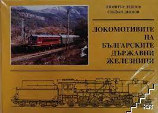
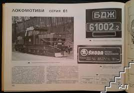
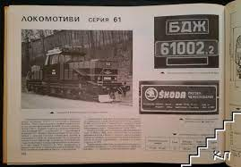

назад
Източници
За 41 серия
За 42 серия
За 43 серия
За 43P серия
За 46 серия
За 61 серия
За 80 серия
Информацията за историята на локомотивите, част от снимковия материал, катастрофите и параметрите е вземана също от книгата на Димитър Деянов и Стефан Деянов - Българските железници.
  

Благодаря също на Иван Манолов, Цветан Александров, Александър Ковачев, Веселин Малинов, Иван Панайотов и Виктор Владимиров за допълнителното предоставена информация и снимков материал!